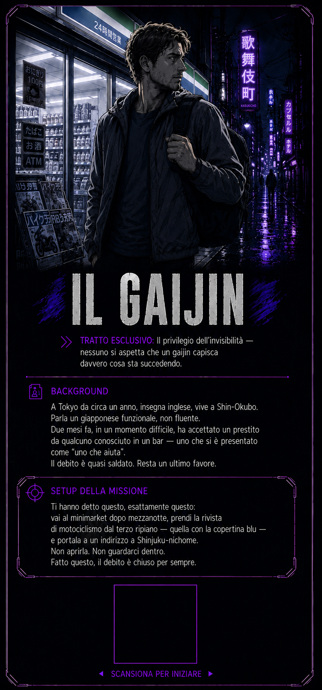

Colonna sonora — また同じ夜に, Keiko Kurosawa
Shinjuku, ottobre 2025. Sono le 00:04. Hai ripetuto le istruzioni per tutto il tragitto. Terzo ripiano. Copertina blu. Niente di più.
Apri ChatGPT (o un'altra chat AI)
Incolla il testo copiato
Premi invio — la partita inizia